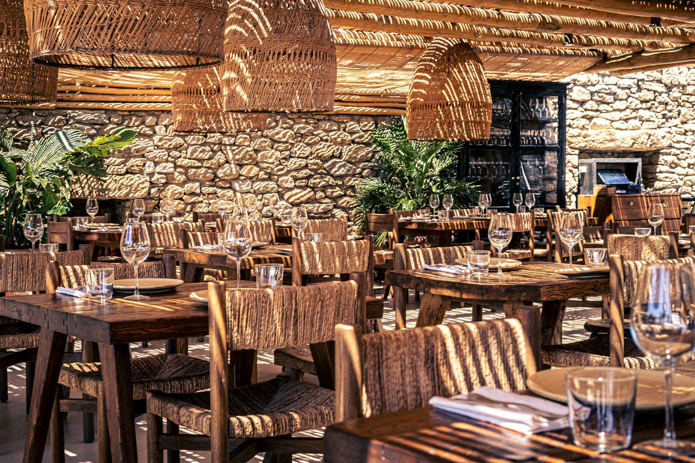
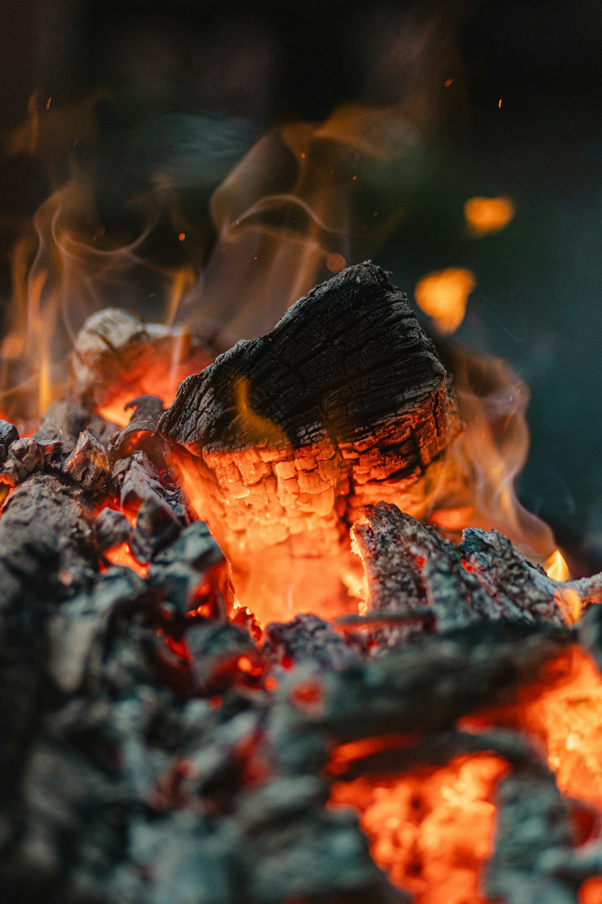
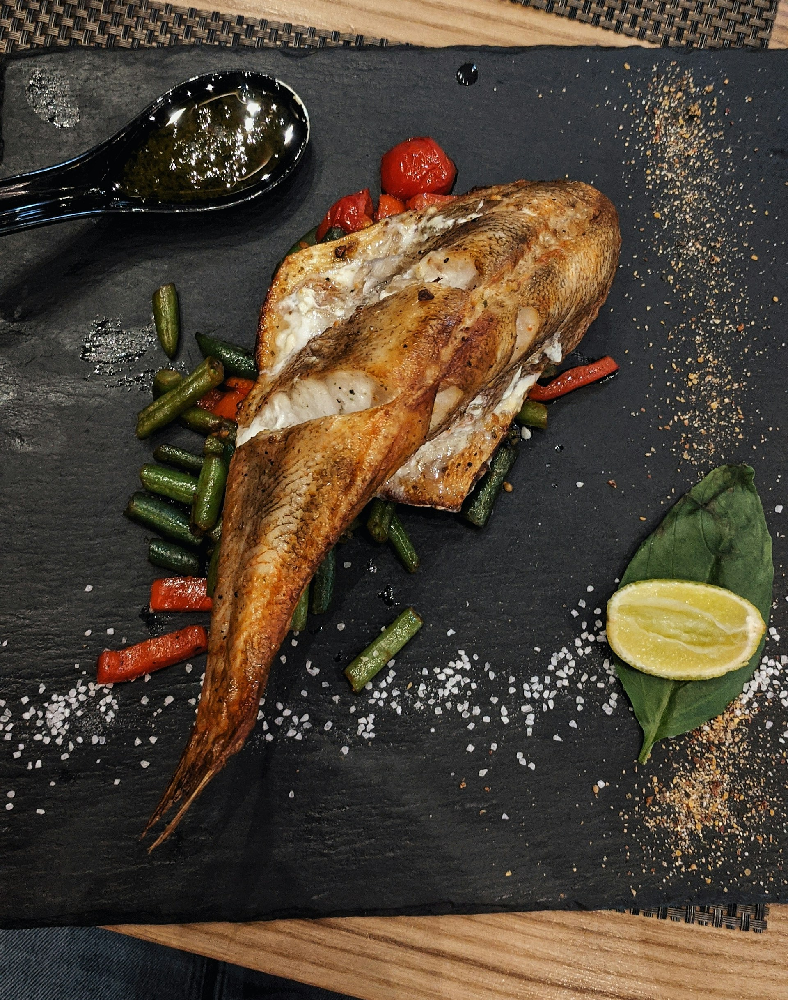
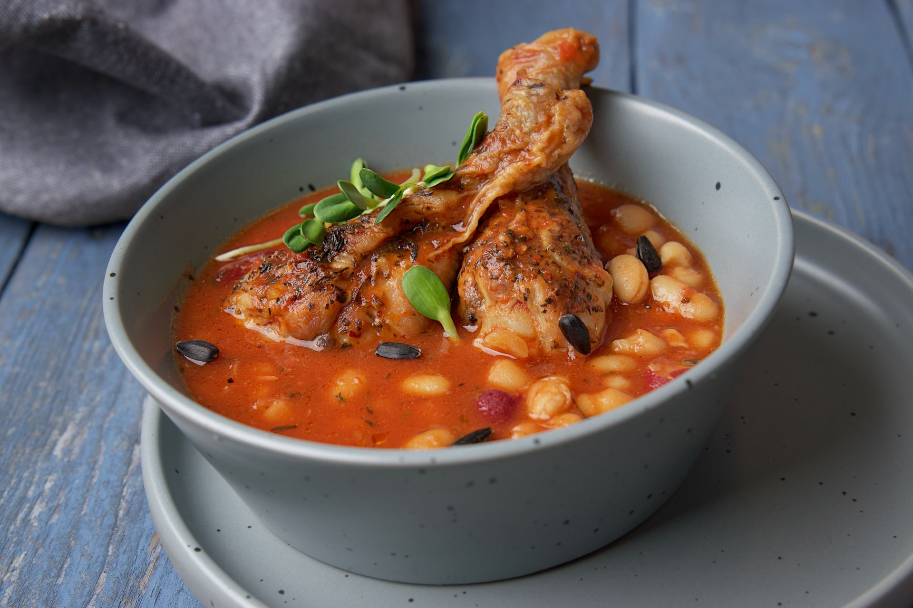
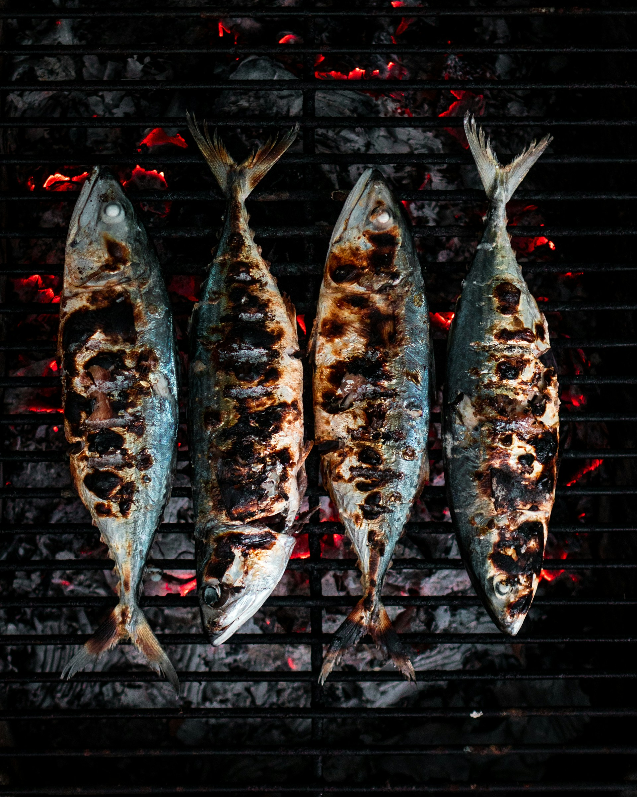
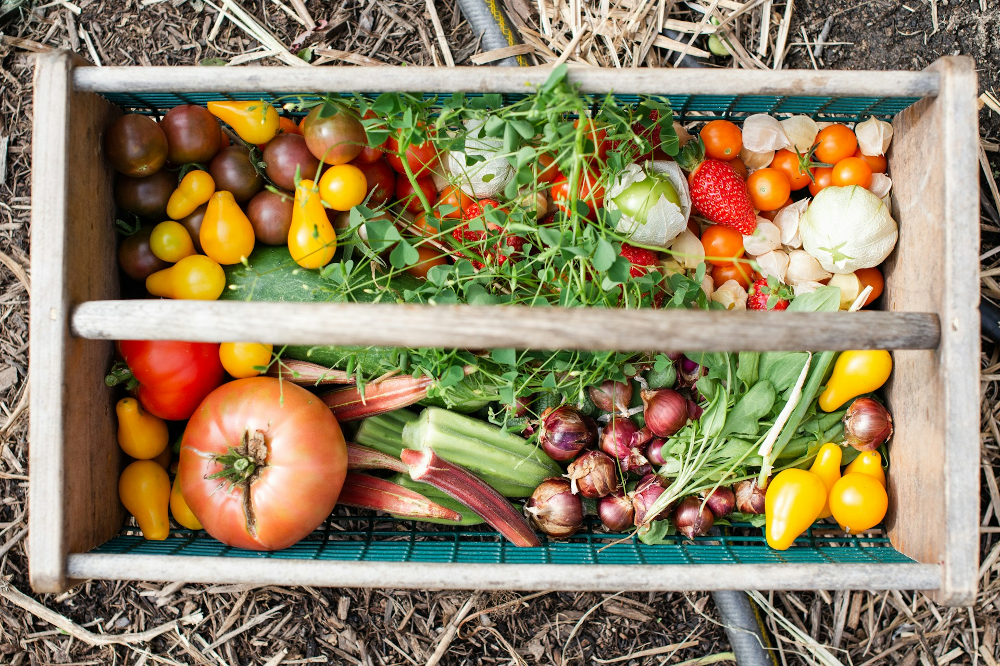
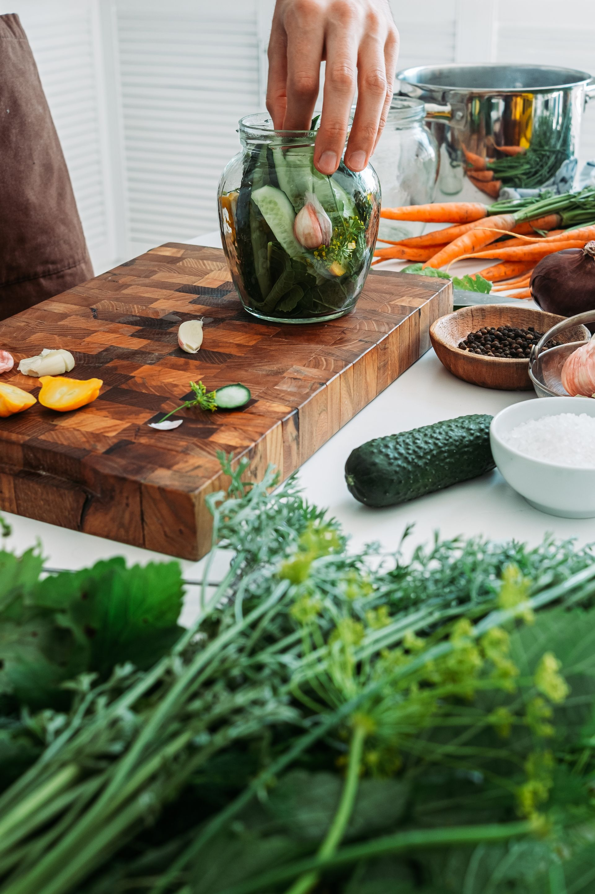
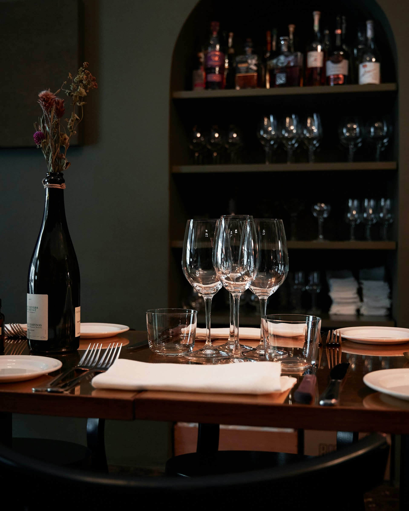

Galería
Un recorrido por la sala, la brasa y la mesa.
Imágenes provisionales. Las fotografías definitivas se añadirán con su autor, su fuente y su licencia. Hasta entonces, cada recuadro indica qué se mostrará.
Fotografías








Y después, a la mesa
Si te ha apetecido lo que has visto, puedes enviarnos una solicitud. Recuerda que no es una reserva confirmada hasta que el restaurante responda.